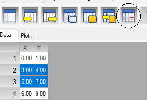

Insert and delete data
To insert new row choose Data > Insert or Insert from the context menu. Also combination of Ctrl + I keys. To open the context menu position the mouse over the table and click the right button of the mouse.
To delete data select rows you want to delete and Data > Delete or Delete Selected from the context menu. Also you can click on the delete data button:

To select multiple not adjacent rows press down and hold Ctrl key and click with the mouse on each of the rows.